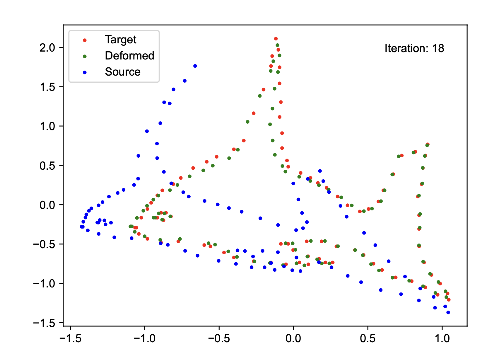
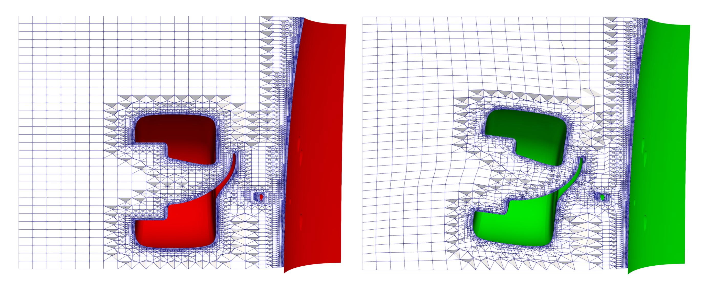
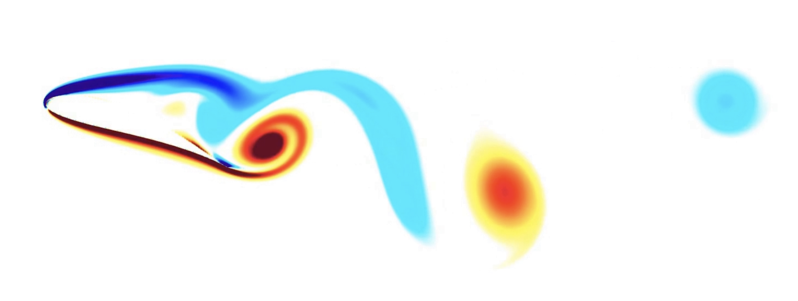
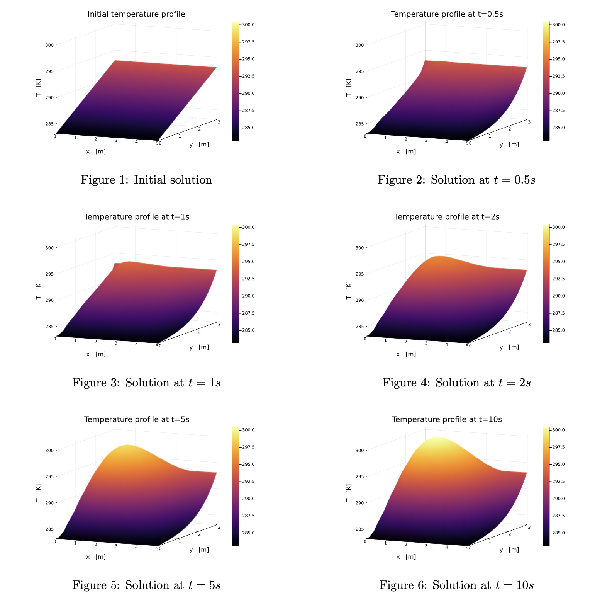

Development of Mesh Deformation Methods for External Aerodynamics Simulations
Conducted at McLaren F1 Racing as part of my MSc in Aeronautics at Imperial College London, this project focused on the numerical handling of large mesh deformations for unsteady aerodynamic simulations.
As part of this work, I designed a computational framework based on non-rigid point set registration, aiming to infer arbitrary vehicle movements by minimizing a log-likelihood objective. This enabled the estimation of realistic deformation fields from visual or synthetic input data, which can be used to replicate recurrent aerodynamic issues — such as porpoising, a vertical oscillation phenomenon driven by suspension dynamics at high speeds.


Left: application of a non-rigid point set registration algorithm to determine smooth deformations by minimizing a log-likelihood function.
Right: deployment on non-sensitive data, tracking tire behavior during cornering.
Three-Dimensional Navier-Stokes Equations using HPC and Structured Numerical Methods
Efficient and Accurate Simulations of Three-Dimensional Flows past Obstacles with Vorticity-Based Penalization
Conducted between UCLouvain and MIT (Van Rees Lab). Implemented using the Murphy C++ framework for adaptive multiresolution PDEs, with GPU & MPI acceleration. Repository →

Vortex dynamics visualized on an aircraft wing slice using adaptive multiresolution simulation
Pricing SaaS Tool (WIP)
Full-stack SaaS platform to help small businesses optimize pricing using Django (backend) and React (frontend). The data used is based on scrapping macro events available online. Currently under development and testing.
Breast Cancer Diagnosis via First-Order Optimization
Side project. I applied a regularized gradient-based logistic regression training to predict cancer detection (Python).
Trained using the Breast Cancer Wisconsin dataset, including feature selection and convergence diagnostics.
The approach focused on minimizing a penalized loss function to balance model complexity and predictive performance.
As a result, the model achieved approximately 3% misclassification error on the test set. Repository →
Sparse Heat Partial Differential Equation Solver
Explicit integration of the 2D heat equation with sparse matrices and finite difference methods (C++). Includes LU validation and boundary condition handling. Repository →

Evolution of a temperature field over time using explicit finite difference integration
Parallel Conjugate Gradient Solver
Conjugate gradient solver implemented with both MPI and CUDA (C++), benchmarked for scalability and performance on large sparse systems. Repository →
Shallow Water Equation Solver
Finite volume solver (MATLAB) for 2D shallow water equations, with conservative schemes and hydraulic jump modeling. Repository →